A walkthrough of every screen — search, My List, venues, friends, and syncing your list to a real Spotify or Apple Music playlist.
Home searches the full BootStepper dance catalog — every dance, its choreographer, song, count, and difficulty. Find one and tap Want, Learning, or Learned right from the search results — no extra screen, no separate "add" step.
Each card also shows a Watch video link and whether its song has Spotify, Apple Music, or YouTube Music links attached, pulled in automatically from the catalog.
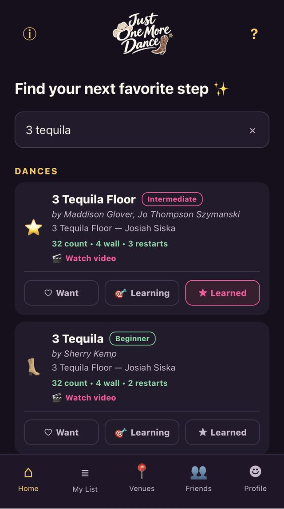
Every dance you've saved lives on My List — searchable, and filterable by venue, difficulty, choreographer, counts, and more. Sort by any of those too, or by when you added it.
Turn on Select to tag a batch of dances to a venue at once, or clear several off your list in one pass — no need to open each one individually.
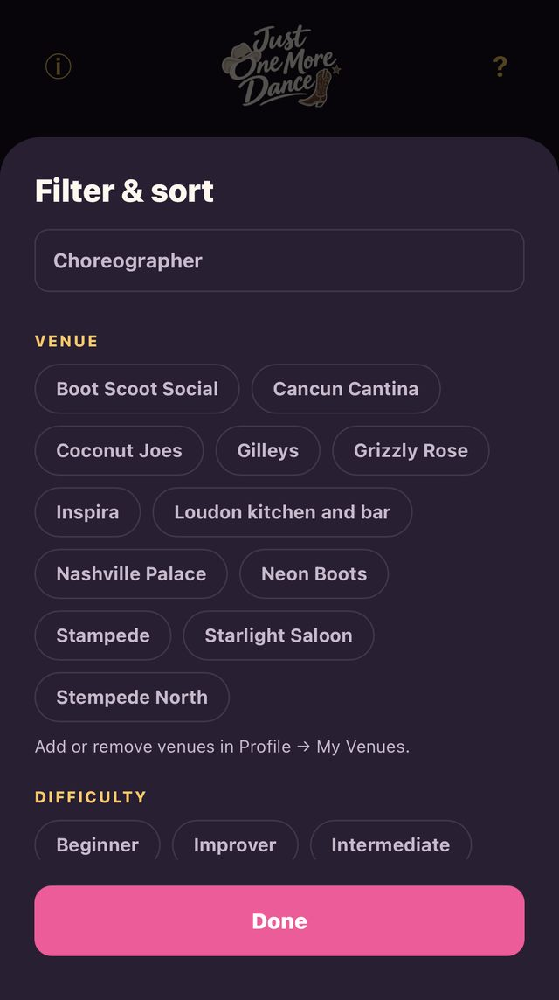
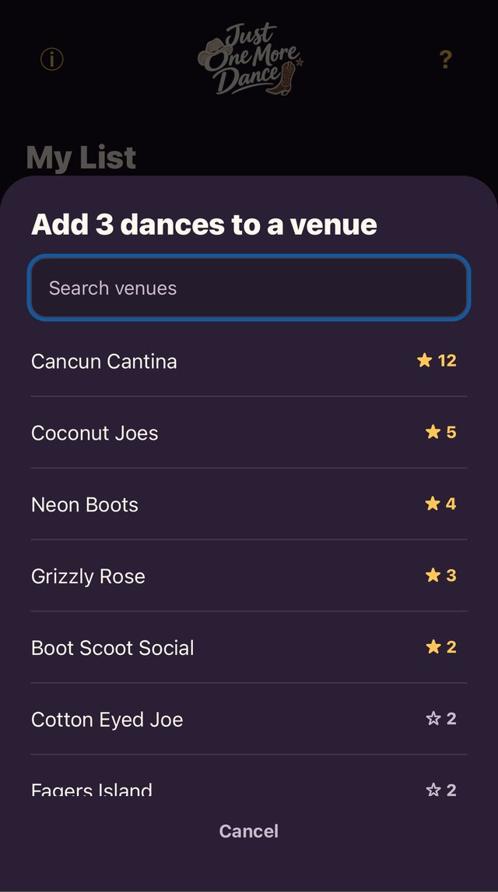
Connect Spotify or Apple Music in Profile, and My List gets a Create Playlist button — it builds a playlist on your account from the songs behind your dances. Sync it again any time and only what's changed gets updated.
Sync is careful about it: if you remove a song from the playlist yourself in Spotify or Apple Music, it stays removed — sync won't add it back. If you remove a dance from My List instead, you're asked whether to keep the song in the playlist or take it out too.
Choose which dances count in Profile — Learning + Learned by default, or open it up to everything on My List.
Browse any venue in the shared catalog — not just your own — and see which dances other people are actually reporting there, with a live count of how many dancers tagged each one.
Set a home bar in Profile and it's pinned to the top every time you open Venues.
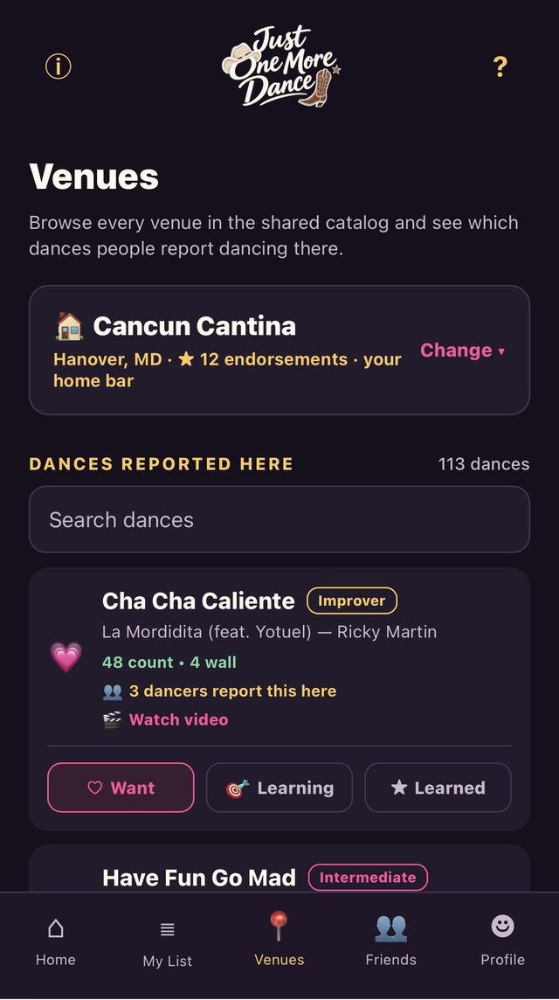
See what your friends are learning, add them from a username, and get a feed of what's changed on their list. Make an event to tell everyone where you're dancing and see a live headcount of who's coming.
Found a friend's list you like? Import their dances straight into your own — one at a time or all at once.
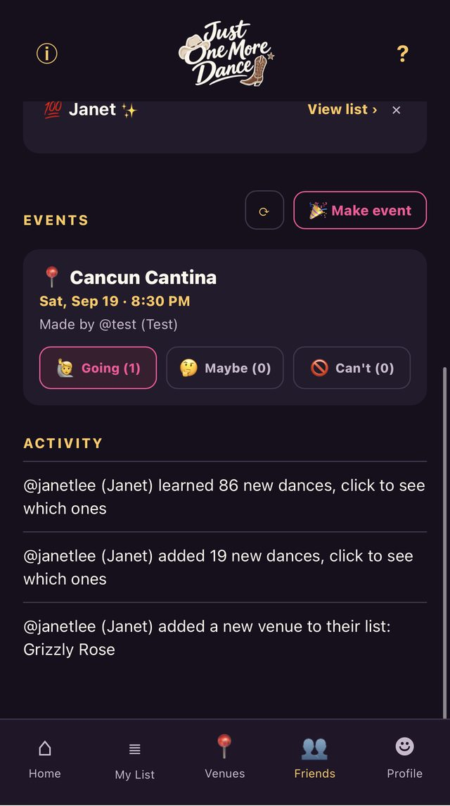
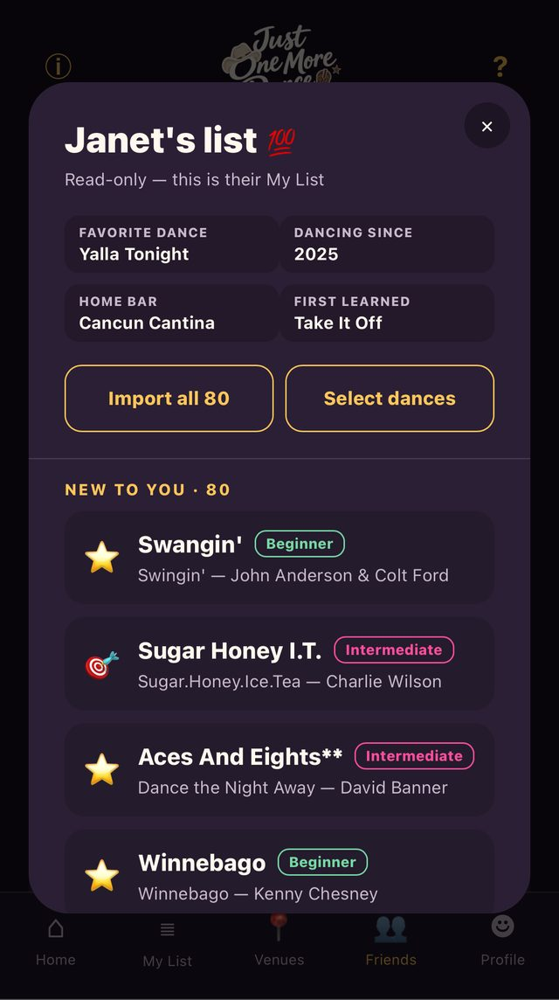
Paste it in from your Notes app, a spreadsheet, or anywhere else — a checklist, bullet list, or numbered list all work. Just One More Dance matches each line to the real dance in the catalog and pulls in any demo or tutorial link you'd already saved next to it.
Stop partway through and pick up right where you left off later — nothing's lost.
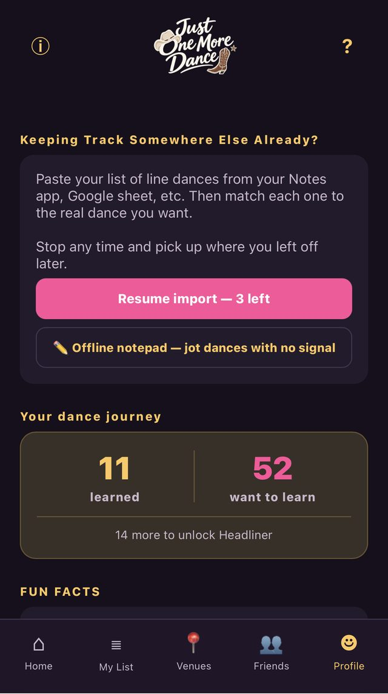
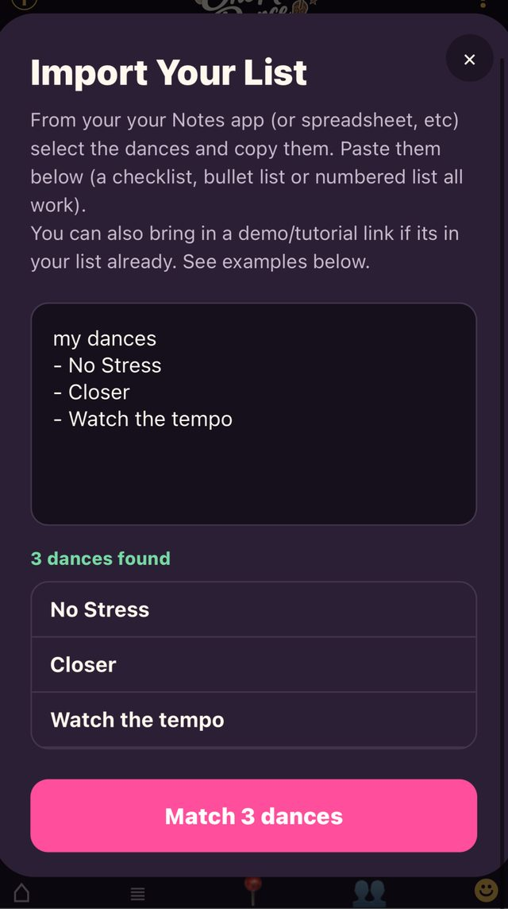
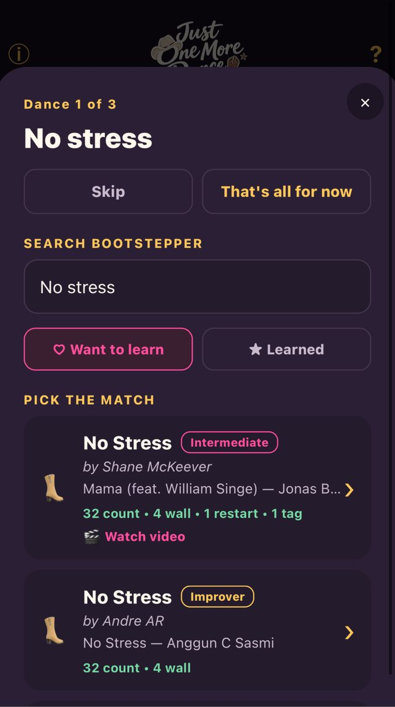
Profile keeps a running count of what you've learned and want to learn, fun facts for friends to see on your public profile, and a full set of milestone awards from First Steps at your very first dance up to Menace at 200.
Manage every venue you've added from here too — set your home bar, or remove one you don't dance at anymore.
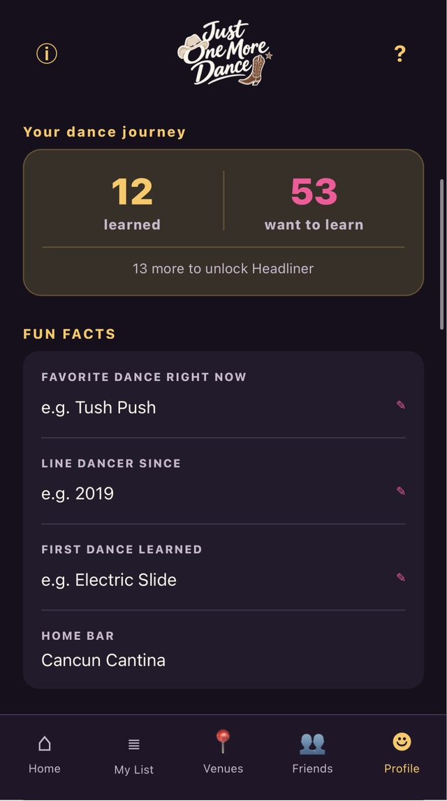
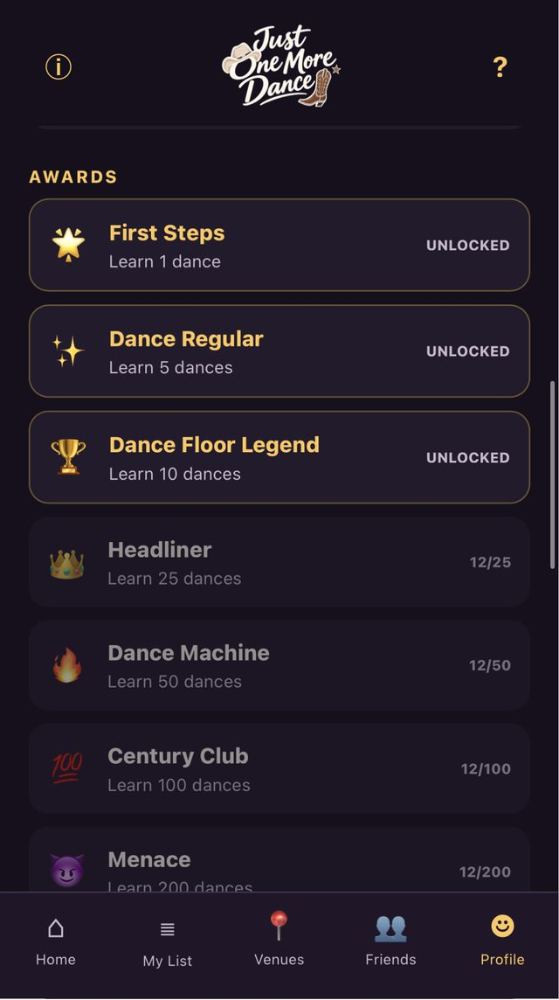
Free to sign up — track up to 50 dances, then upgrade any time for unlimited tracking, Venues, Friends, and playlist sync.